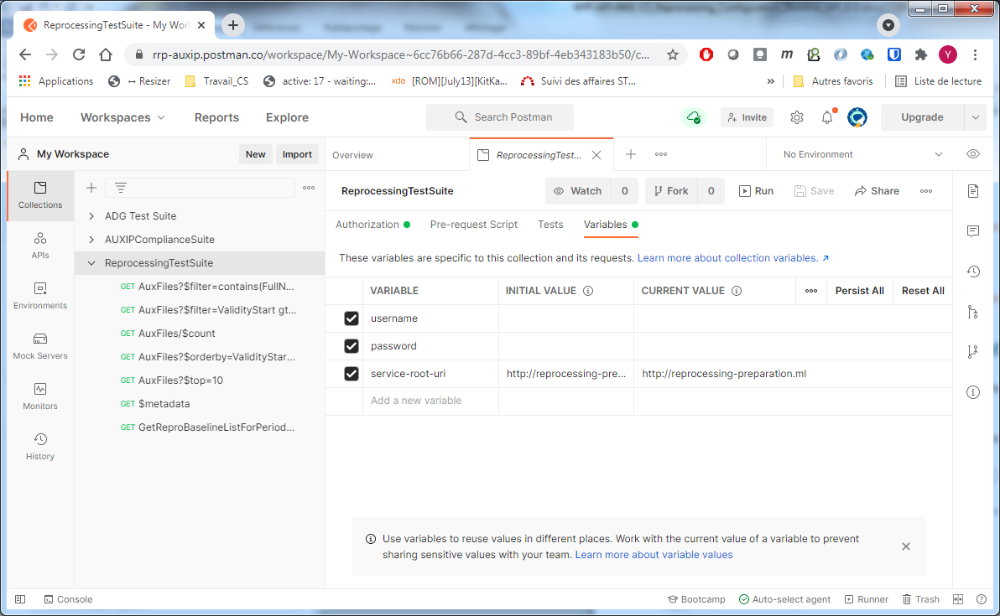
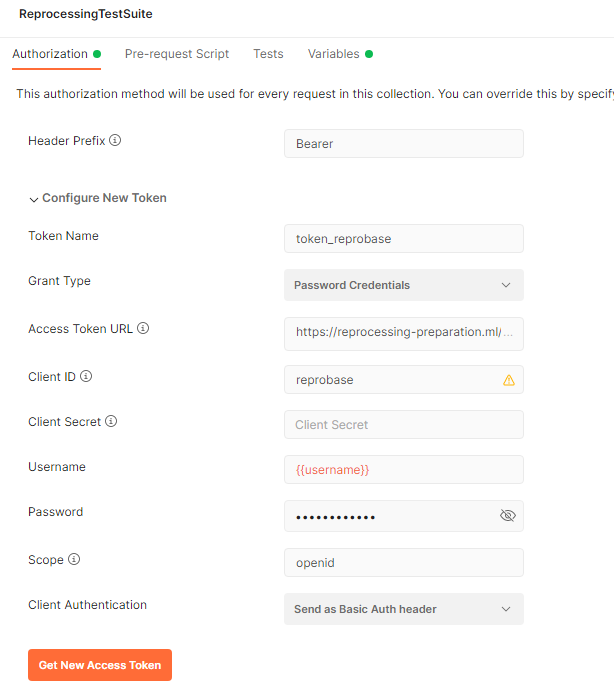
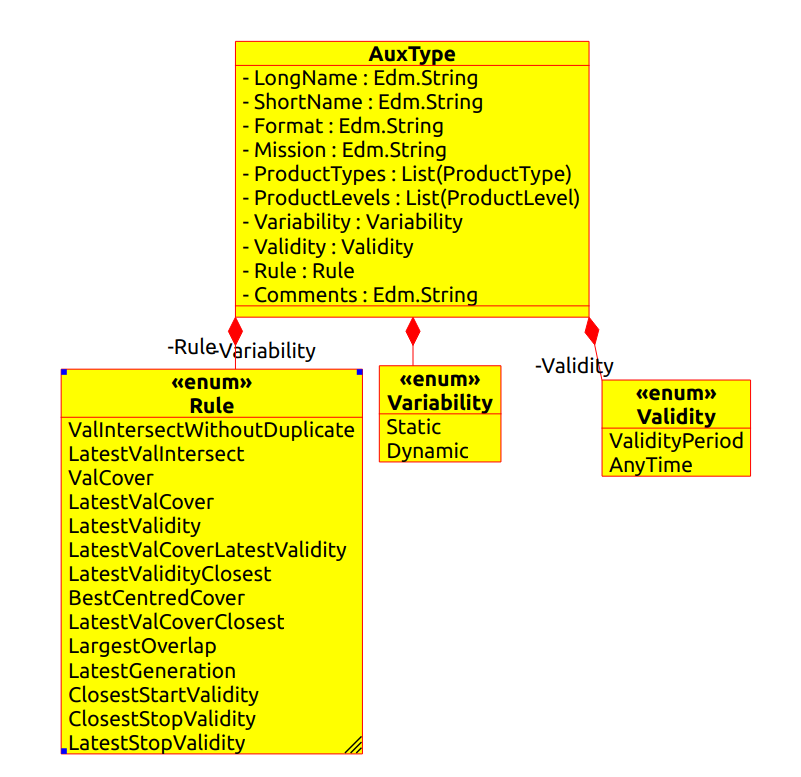
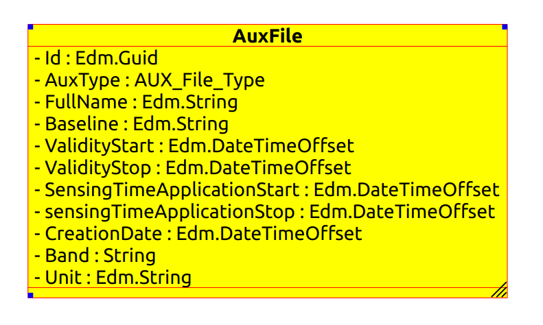

AuxTypes are extracted from
the RRPP Usermanual:
AuxTypes are extracted from
the RRPP Usermanual:| Description | Version | Date |
|---|---|---|
| Issued | 1.0 | 04/12/2020 |
| Corrections on user manuals references | 1.1 | 15/12/2020 |
| Modifications on function calls | 1.2 | 18/12/2020 |
| Added functions to extract names only | 1.3 | 05/01/2020 |
| OAuth2 authentication | 1.4 | 08/04/2021 |
| Correction on authentication | 1.5 | 15/04/2021 |
| Add Parameter list table | 1.6 | 25/06/2021 |
Change Log:
Table of contents
2.1 Token generation for developers 7
2.2 Access though Postman Client 7
3.3.2 Reprocessing Configuration Baseline (AUX Files) 13
3.4.2 $filter query function 16
3.4.3 Query response modification 16
3.4.5 Query response content 17
This documents details the API entry points for the Reprocessing Configuration Baseline API. It gives the summary of the data access through an OData V4 format.
OData Documentation http://www.odata.org/documentation
OData Protocol http://docs.oasis-open.org/odata/odata/v4.01/odata-v4.01-part1-protocol.html
REPROCESSING REFERENCE PACKAGE PREPARATION
| Term | Definition |
|---|---|
| API | A set of functions and procedures allowing the creation of applications that access the features or data of an operating system, application, or other service. |
| AUX_File | Auxiliary file used in a satellite processing chain |
| Acronym | Signification |
|---|---|
| AD | Applicable Document |
| UUID | Universally Unique Identifier – Allows to identify an instance |
| JSON | JavaScript Object Notation, commonly used format in web services |
| URI | Uniform Resource Identifier |
The Reprocessing service enforces that only queries from authenticated clients are accepted and that the access rights are applied. If a client calls a Reprocessing service function without permission, it is informed with a corresponding return message.
Figure 1: ICD allowing Sign in and registration
First you should have an account. You can use the “Register” link to do so.
Figure 2 : Registering page
To be able to start using the Reprocessing service via postman or by sending requests, a client should first request for the access token using its credentials (username and password) from the following Reprocessing token endpoint:
https://reprocessing-auxiliary.copernicus.eu/auth/realms/reprobase/protocol/openid-connect/token
Example of getting the access token using curl tool:
USER=username
PASSWORD=password
RAWTKN=$(curl -s -X POST \
-H "Content-Type: application/x-www-form-urlencoded" \
-d "username="$USER \
-d "password="$PASSWORD \
-d 'grant_type=password' \
-d "client_id=reprobase" \
https://reprocessing-auxiliary.copernicus.eu/auth/realms/reprocessing-preparation/protocol/openid-connect/token \
|jq . )
TOKEN=$(echo $RAWTKN | jq -r '.access_token')
echo "Token to be used to access to Reprocessing Configuration Baseline service : ${TOKEN} "
Once credentials are obtained, you can import the preconfigured Postman script “ReprocessingTestSuitePostman.json”.
Once imported on the “Variables” tab of the collection “ReprocessingTestSuite”, add the “username” and “password”.

Figure 3 : Variables configuration
In the “Authorization” tab, click on “Get New Access Token”.

Figure 4 : Token creation
After that, click on “Use Token” and “Save” the collection. You can new use the requests in postman during the validity time of the token (10min).
The Reference Baseline Access Point allows to visualize and to retrieve the list of auxiliary files needed for a reprocessing of L1 and L2 Sentinel 1, Sentinel 2 and Sentinel 3 data. There are two tables:
“AuxFiles“ contains all aux files with their respective information
“AuxTypes” contains all the possible auxiliary file type with their description
AuxTypes is the representation of the ‘all’ sheet in the RRPP_all_AUX.xls file.
AuxFiles is the concatenation of all the sensor sheet ‘S2L1’ ‘S2L2’ … in the RRPP_all_AUX.xls file.
These tables can be queried using all the Odata standard function. Some specific functions to retrieve the list for specified parameters are also available.
Detailed description is available in Configuration Baseline User Manual:
For Sentinel- 1 RRPP-TN-0006-CS
For Sentinel-2-MSI RRPP-TN-0004-CS
For Sentinel-3 RRPP-TN-0007-CS
Interface is designed using an OData web service and secured through an OAuth 2.0 gateway.
The content is automatically updated with the new baseline and the new auxiliary files set lists.
Interface access is done through an Oauth 2.0 identification scheme see §2. Client Administration .
The nominal use case is a user request based on auxiliary data attributes using the OData V4.0 standard API.
The API description is available at the URI <host>/reprocessing.svc/$metadata
Case1 : Download the entire tables
Entire tables can be retrieved using directly the collection name in the Odata service.
For exemple :
<host>/reprocessing.svc/AuxFiles
Will retrieve all the AuxFile registered in the service
<host>/reprocessing.svc/AuxTypes
Will retrieve all the AuxType registered in the service
Case2: Make specific query with OData filter accordingly to user needs.
In the case of Reprocessing Configuration Baseline the client uses the API to request a list of auxiliary files referenced in the baseline data by sending a GET Products List Query in OData format. The query can contain filter on all the table fields (Satelite, Satelite Unit , Sensing time period (Application), Product type, Aux Validity Start Date, Full Auxiliary name, creation date, baseline, file_type). The user can query for the auxiliary list requesting a particular Mission, Unit, period and product type he is interested in. Basically OData protocol allows to query any range on parameters with the keyword “filter” (see next chapter on possible queries. This query can either be achieved using a standard OData query but also using a specific ODataFunction to do so.
In response, the Reference Baseline Service sends the list of auxiliary files corresponding to the request.
Two main collections (tables) are available in the service:
AuxTypes
AuxFiles
Table 1 AuxTypes Table
AuxFiles are ingested using the data provided by ESA, most of their representation comes from the RRPP_All_Aux.xlsx
Table 2 Aux files
Each AuxFile from the ‘AuxFiles’ table has a link to an AuxType in the ‘AuxTypes’ table.
Each AuxFile is a standalone entry and there is no group. However it is easily possible using Odata queries to get a list of AuxFiles sharing the same attributes values or with atrributes included in a range. It is also possible to have comparison tests in queries, on date for example to search all the applicable AuxFiles for a particular sensingTime.
| <root>/reprocessing.svc/AuxFiles?$filter=(SensingTimeApplicationStart lt 2019-01-16T22:00:00Z) and (SensingTimeApplicationStop gt 2019-01-16T22:00:00Z) |
|---|
To get the list of AuxFiles that are applicable for date 2019-01-16T22:00:00
The AuxTypes table contains all the AuxType defined in the RRPP_all_Aux.xlsx.
Full list can be retrieved using a simple HTTP GET request on : <host>/reprocessing.svc/AuxTypes
Odata filters can also be applied if needed on any of the attributes

Figure 5 AuxType diagram
| Property | Type | Mandatory | Description | Example |
|---|---|---|---|---|
| LongName | String | Yes | AUX file type full name | S1__AUX_SCS |
| ShortName | String | No | Short Name | AUX_SCS |
| Format | String | Yes | Format of the data stored in the aux file | SAFE/ASCII/ GRIB/NETCDF … |
| Mission | String | Yes | Mission using this aux type | S2MSI |
| ProductLevels | List(ProductLevel) | Yes | List of product level applicable for the AUX Type | L0 / L1 / L2 |
| ProductTypes | List(ProductTypes) | Yes | List of product types applicable for the AUX Type | L1A / L1B … |
| Variability | Variability | Yes | Define the variability according to time/condition | static / dynamic |
| Validity | Validity(Enum) | Yes | Define the validity mode for applying the sensing time applicability period. If the type is AnyTime then the file is always valid no matter the requested date but the latest file should be used. If the type is ValidityPeriod then the file is only valid for its sensingTimeApplication period. | Either: - AnyTime : Valid any time - ValidityPeriod : Valid only on the SensingApplication period |
| Rule | Rule(Enum) | Yes | Applicable rule to search for this aux file type when multiple are available for the date | ValIntersectWithoutDuplicate |
| Comments | String | Yes | Short description of the aux file type | Ex: Instrument parameters for IPF |
Table 2: Entity Description
The AuxFile represents an actual auxiliary file.
The full list of files can be retrieved using:
<host>/reprocessing.svc/AuxFiles

Figure 6 : AuxFile diagram
| Property | Type | Mandatory | Description | Example |
|---|---|---|---|---|
| Id | UUID | Yes | ID de l’auxiliary file | 2b17b57d-fff4-4645-b539-91f305c27c69 |
| AuxType | AuxType()(see above) | Yes | OData navigation link to the AuxType associated with the file. See 3.3.1 for the AuxType description | AuxType(‘S1__AUX_SCS’) |
| FullName | String | Yes | Full name of the file | S2A_OPER_GIP_R2MACO_MPC__ 20150605T094742_V20150622T000000_21000101T000000_BXX |
| Baseline | String | Yes | Baseline in which this file was used | ”02.09” |
| ValidityStart | DateTimeOffset | Yes | ValidityStart date | "2019-02- 17T09:00:00.000Z" |
| ValidityStop | DateTimeOffset | Yes | ValidityStop date | "2019-02- 17T21:00:00.000Z |
| SensingTimeApplicationStart | DateTimeOffset | Yes | SensingTimeApplicationStart date | "2019-02- 17T09:00:00.000Z" |
| SensingTimeApplicationStop | DateTimeOffset | Yes | SensingTimeApplicationStop date | "2019-02- 17T21:00:00.000Z |
| CreationDate | DateTimeOffset | Yes | Creation date | "2019-02- 17T21:00:00.000Z |
| Band | String | Yes | Band: B01 or BXX for any bands | « Band » : « B01 » (for band 1 file version) « Band » : « BXX » ( for any band file version) |
| Unit | String | Yes | Unit : A / B / X X stands for any Unit |
« Unit » : « A » (for unit A file version) « Unit » : « X » ( for any Units) |
Table 3: AuxFile Description
* For this, and for all other instances of the use of ‘Guid’ for IDs in this document, it should be noted that the IDs are UUIDs (Universally Unique Identifiers) of the (OData) Guid type.
The service naturally supports almost all the intrinsic OData requests
Some high level functions are available within the API. However due to a missing feature in the Odata framework we are using they do not appears in the $metadata odata service document.
All parameters are optionals and if not specified no filtering is done one the criteria, returning the whole list filtered only on given parameters. No blank space is allowed as it is an URL. Parameters are named.
Here is a description of the parameters and possible values:
| Name | Description | Format | List of possible values | |
|---|---|---|---|---|
| Mission | Mission identifier | String | S2MSI, S1SAR, S3OLCI, S3MWR, S3ALL, S3SRAL, S3SYN, S3SLSTR | |
| Unit | Unit Identifier | String | { A , B } | |
| SensingTime | SensingTime to search for | Date | Any date in format '2018-05-02T12:00:30Z' | |
| SensingTimeStart | SensingTimeStart to search for | Date | Any date in format '2018-05-02T12:00:30Z' | |
| SensingTimeStop | SensingTimeStop to search for | Date | Any date in format '2018-05-02T12:00:30Z' | |
| ProductType | Product type to search AuxFiles needed to produce it | String | S1SAR : { L1SLC, L1GRD, L2OCN } S2MSI : { L1A, L1B, L1C, L2A } S3ALL : { L1, L2} S3MWR : { L1CAL, L1MWR } S3OLCI : { L2LFR, L2LRR } S3SLSTR : { L1RBT, L2LST, L2FRP } S3SRAL : { L1CAL, L1SRA, L2LAN } S3SYN : { L1MISR, L2 } |
And here are the available functions :
<root-uri>/reprocessing.svc/GetReproBaselineListForSensing(Mission, Unit, SensingTime, ProductType): query the list of aux file for these particular parameters. Parameters should have the values of the odata keys. Returned type is of odata type AuxFile.
GetReproBaselineListForSensing(Mission='S2MSI',Unit='A',SensingTime='2018-05-02T12:00:30Z',ProductType='L1B')
GetReproBaselineListForSensing(Mission='S1SAR',Unit='A',SensingTime='2018-05-02T12:00:30Z',ProductType='L1')
GetReproBaselineListForSensing(Mission='S3OLCI',Unit='A',SensingTime='2018-05-02T12:00:30Z',ProductType='L1')
<root-uri>/reprocessing.svc/GetReproBaselineListForPeriod(Mission, Unit, SensingTimeStart, SensingTimeStop, ProductType): query the list of aux file for these particular parameters. Since it is a period and not a single date the list can contains multiple version of the same auxfile. Return type is of odata type AuxFile.
GetReproBaselineListForPeriod(Mission='S2MSI',Unit='A',SensingTimeStart='2018-05-02T12:00:30Z',SensingTimeStop='2020-05-02T12:00:30Z',ProductType='L1B')
GetReproBaselineListForPeriod(Mission='S1SAR',Unit='A',SensingTimeStart='2018-05-02T12:00:30Z',SensingTimeStop='2020-05-02T12:00:30Z',ProductType='L1')
GetReproBaselineListForPeriod(Mission='S3OLCI',Unit='A',SensingTimeStart='2018-05-02T12:00:30Z',SensingTimeStop='2020-05-02T12:00:30Z',ProductType='L1')
<root-uri>/reprocessing.svc/GetReproBaselineNamesForSensing(Mission, Unit, SensingTime, ProductType): query the list of aux file names for these particular parameters. Parameters should have the values of the odata keys. Return type is a list of String containing the list of filenames.
GetReproBaselineNamesForSensing(Mission='S2MSI',Unit='A',SensingTime='2018-05-02T12:00:30Z',ProductType='L1B')
<root-uri>/reprocessing.svc/GetReproBaselineNamesForPeriod(Mission, Unit, SensingTimeStart, SensingTimeStop, ProductType): query the list of aux file names for these particular parameters. Since it is a period and not a single date the list can contains multiple version of the same auxtype. Return type is a list of String containing the list of filenames.
GetReproBaselineListForPeriod(Mission='S2MSI',Unit='A',SensingTimeStart='2018-05-02T12:00:30Z',SensingTimeStop='2020-05-02T12:00:30Z',ProductType='L1B')
Please note that these functions are just shortcuts for the corresponding odata queries.
The OData “filter” query is a very versatile query that allows a substancial number of possibilities on attributes such as:
Startswith (startswith) : attribute target starts with the given sequence in parameters
Contains (contains) : attribute target contains the given sequence in parameters
Endswith (endswith) : attribute target ends with the given sequence in parameters
Greater than (gt) : attribute target is greater than given sequence in parameters, comparison is type-wise
Less than (lt) : attribute target is lesser than given sequence in parameters, comparison is type-wise
These are applicable on any attribute type that can be compared: time, number, strings. They also can be mixed with “and” or “or” in order to have more possibilities.
For example:
| <root-uri>/reprocessing,svc/AuxFiles?$filter=ValidityStart gt 2019-05-15T00:00:00.000Z and ValidityStop lt 2019-05-16T00:00:00.000Z and Sensors/Name contains S2MSI |
|---|
Query response can be modified before sent to client.
For example it is possible to change the order using the $orderby parameter. You can also only have the top N results with the $top parameter or skip N result using $skip. There is also a possibility to just count the number of results using $count.
It is possible to export the full table using the expand parameter in Odata.
| AuxFiles?$expand=AuxType$format=json |
|---|
Will export all the AuxFiles with their associated AuxTypes
The query response is contained in the GET HTTP response. The default format is xml even though if the label “content-type” equals “application/json” the result will be in JSON format.
HTTP error responses are the classical HTTP errors:
| Error Code | Signification |
|---|---|
| 200 | Accepted, response given |
| 400 | Bad request |
| 401 | Unauthorized ( sent by the authentication gateway) |
| 404 | Not found |
| 500 | Internal Server error |
Appendix A : ODATA metadata
<edmx:Edmx Version="4.0"> <edmx:DataServices> <Schema Namespace="OData.RBA"> <EntityType Name="AuxType"> <Key> <PropertyRef Name="LongName"/> </Key> <Property Name="LongName" Type="Edm.String" Nullable="false"/> <Property Name="ShortName" Type="Edm.String" Nullable="false"/> <Property Name="Format" Type="Edm.String" Nullable="false"/> <Property Name="Mission" Type="Edm.String" Nullable="false"/> <NavigationProperty Name="ProductLevels" Type="Collection(OData.RBA.ProductLevel)" Nullable="false"/> <NavigationProperty Name="ProductTypes" Type="Collection(OData.RBA.ProductType)" Nullable="false"/> <Property Name="Variability" Type="OData.RBA.Variability" Nullable="false"/> <Property Name="Validity" Type="OData.RBA.TimeValidity" Nullable="false"/> <Property Name="Rule" Type="OData.RBA.Rule" Nullable="false"/> <Property Name="Comments" Type="Edm.String" Nullable="false"/> </EntityType> <EntityType Name="AuxFile"> <Key> <PropertyRef Name="Id"/> </Key> <Property Name="Id" Type="Edm.Guid" Nullable="false"/> <NavigationProperty Name="AuxType" Type="OData.RBA.AuxType" Nullable="false"/> <Property Name="FullName" Type="Edm.String" Nullable="false"/> <NavigationProperty Name="Baseline" Type="Edm.String" Nullable="false"/> <Property Name="ValidityStart" Type="Edm.DateTimeOffset" Nullable="false"/> <Property Name="ValidityStop" Type="Edm.DateTimeOffset" Nullable="false"/> <Property Name="SensingTimeApplicationStart" Type="Edm.DateTimeOffset" Nullable="false"/> <Property Name="SensingTimeApplicationStop" Type="Edm.DateTimeOffset" Nullable="false"/> <Property Name="CreationDate" Type="Edm.DateTimeOffset" Nullable="false"/> <Property Name="Band" Type="Edm.String" Nullable="false"/> <Property Name="Unit" Type="Edm.String" Nullable="false"/> </EntityType> <EntityType Name="ProductLevel"> <Key> <PropertyRef Name="Level"/> </Key> <Property Name="Level" Type="Edm.String" Nullable="false"/> </EntityType> <EntityType Name="ProductType"> </EntityType> <EnumType Name="Variability"> <Member Name="Static"/> <Member Name="Dynamic"/> </EnumType> <EnumType Name="Rule"> <Member Name="ValIntersectWithoutDuplicate"/> <Member Name="LatestValIntersect"/> <Member Name="ValCover"/> <Member Name="LatestValCover"/> <Member Name="LatestValidity"/> <Member Name="LatestValCoverLatestValidity"/> <Member Name="LatestValidityClosest"/> <Member Name="BestCentredCover"/> <Member Name="LatestValCoverClosest"/> <Member Name="LargestOverlap"/> <Member Name="LatestGeneration"/> <Member Name="ClosestStartValidity"/> <Member Name="ClosestStopValidity"/> <Member Name="LatestStopValidity"/> </EnumType> <EnumType Name="TimeValidity"> <Member Name="ValidityPeriod"/> <Member Name="AnyTime"/> </EnumType> <EntityContainer Name="Container"> <EntitySet Name="AuxTypes" EntityType="OData.RBA.AuxType"> <NavigationPropertyBinding Path="ProductLevels" Target="ProductLevels"/> <NavigationPropertyBinding Path="ProductTypes" Target="ProductTypes"/> </EntitySet> <EntitySet Name="AuxFiles" EntityType="OData.RBA.AuxFile"> <NavigationPropertyBinding Path="AuxType" Target="AuxTypes"/> </EntitySet> <EntitySet Name="ProductLevels" EntityType="OData.RBA.ProductLevel"/> <EntitySet Name="ProductTypes" EntityType="OData.RBA.ProductType"/> </EntityContainer> </Schema> </edmx:DataServices> </edmx:Edmx> |
|---|